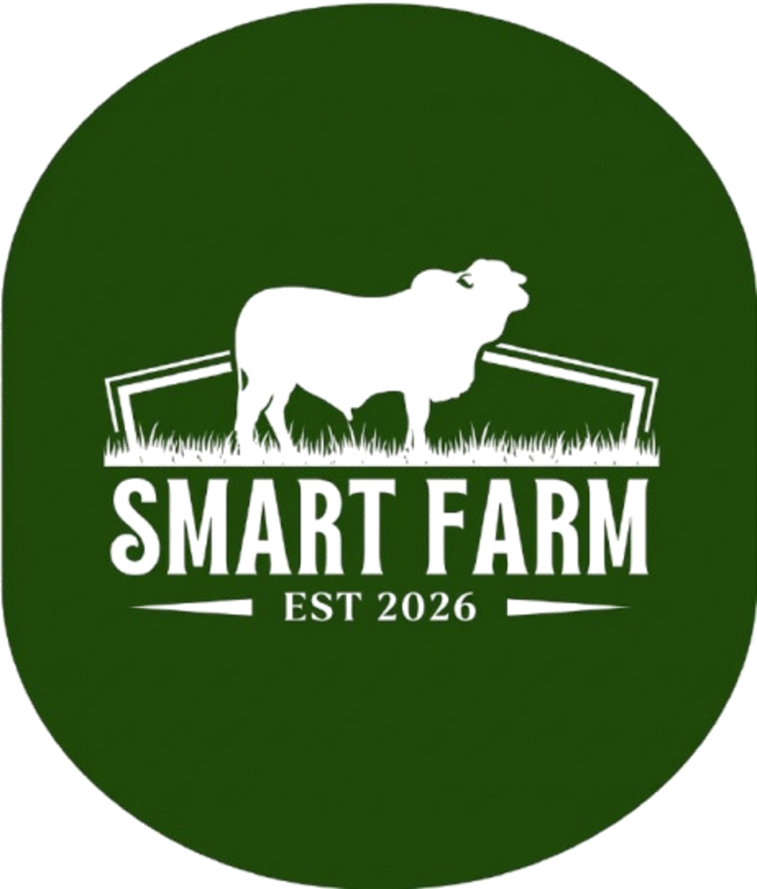

R26-IT-093 · SLIIT Faculty of Computing
Converting a traditional farm into an AI/ML-powered automated smart farm.
Jayawardhana H.A.S. (IT22136138) · Illangasinhe I.M.A.D. (IT22282118) · Shamika G.L. (IT22139894) · Arachchi W.A.A.I.W. (IT22134608)
The problem
Late news is expensive on a small farm.
- Disease is named after milk drops or a lesion is obvious.
- Feed is a habit, disconnected from weight, yield, and health.
- Calving and hatching are prepared for at the last moment.
- The milk price arrives when the buyer announces it.
The project
One phone path for the whole week.
- Illangasinhe I.M.A.D. — disease detection and emergency alerts.
- Jayawardhana H.A.S. — automated feeding from a manual weight measurement.
- Shamika G.L. — healthy calf birth and egg hatch prediction.
- Arachchi W.A.A.I.W. — live market prices and a buy or sell recommendation.
Illangasinhe I.M.A.D. · IT22282118
Two vision models, then a clinical grade.
DenseNet121 and YOLOv8x score the same photograph. The stronger call is kept across eight classes, including healthy. Gradient boosting then grades the case mild, moderate, or severe from temperature, age, and a manually measured weight. YOLOv8s reads nine behaviours from stills and video.
Jayawardhana H.A.S. · IT22136138
Weight is measured, then the ration follows.
The farmer enters a manual weight measurement from a scale or a tape. Daily feed uses that weight with breed, age, milk yield, and activity. Nutrition uses health and production inputs, so a sick or high-yielding cow is not fed like the herd average.
Shamika G.L. and Arachchi W.A.A.I.W.
Birth, hatch, and the live market.
Shamika G.L. predicts a healthy calf birth or egg hatch from image, sensor, and historical records. Arachchi W.A.A.I.W. keeps livestock, milk, egg, and meat prices current and recommends when to buy or sell.
How it is built
Flutter, Flask, and a herd record.
- Flutter is the farmer’s screen.
- One Flask API serves every model.
- Laravel stores users, cows, and prediction history.
- Vision covers disease, behaviour, and identity. Weight stays a measured input.
What we can show
Evidence already in the project.
- DenseNet121: 99.45% on the disease image set.
- YOLOv8x near 99%. Behaviour detection near 83–86%.
- Still-image disease inference on the order of 150 milliseconds in project tests.
- About 3,450–3,500 farm records from the National Livestock Development Board. Disease images include a Kaggle set.